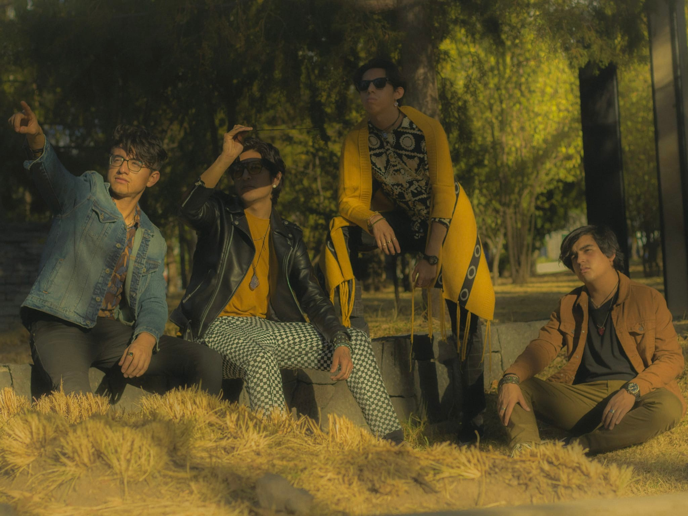

NUESTROS ORÍGENES
“Asi comenzó nuestra amarilla historia...”


“Asi comenzó nuestra amarilla historia...”
Esta idea nació en las noches de frío en las calles de Puebla, entre pláticas interminables y el eco de los primeros acordes en un cuarto de ensayo improvisado. Yelou no empezó como un plan de negocios, sino como una necesidad compartida de soltar lo que traíamos dentro. Queríamos crear algo que se sintiera tan vibrante y eléctrico como el color que nos da nombre.
Somos una banda de rock que no tiene miedo de subirle al volumen. Nos gusta el sonido crudo, las letras que cuentan historias reales y esa energía que solo se siente cuando los amplificadores empiezan a zumbar. Para nosotros, el rock no es solo un género, es la forma en que conectamos con lo que pasa en nuestra ciudad y con la gente que, como nosotros, busca algo más que solo ruido de fondo.
El nombre "YELOU" refleja esa intención de ser algo sencillo pero significativo, una identidad que encapsula la escencia del proyecto: autenticidad, emoción y evolución constante. Como parte de la escena independiente de Puebla, Yelou ha construido su camino a través de presentaciones en foros locale, eventos culturales y festivales emergentes, consolidando una propuesta que conecta con el público desde lo genuino.

Integrantes
Aquí no hay poses ni egos, solo cuatro locos que se juntaron para darle vida a este proyecto. Te presentamos a la banda:.
Leonardo Flores Avila (Voz): El encargado de ponerle sentimiento y garganta a cada rola. Leo es quien nos guía con el micro y el que siempre tiene la energía a tope para conectar con ustedes desde el escenario..
Roberto García Hernández (Guitarra): El de los riffs que se te pegan y no te dejan dormir. Roberto vive con la lira colgada y es el responsable de que nuestras canciones tengan ese sello eléctrico que tanto nos gusta.
Alistair Romero García (Bajo): El que nos mantiene a todos en la tierra. Con el bajo bien firme, Alistair es el pulso y el encargado de que el sonido te pegue directo en el pecho.
Cesar Gonzáles Rivera (Batería): El motor del equipo. Cesar es puro fuego en las baquetas; si sientes que el ritmo no te deja estar sentado, es totalmente su culpa.
